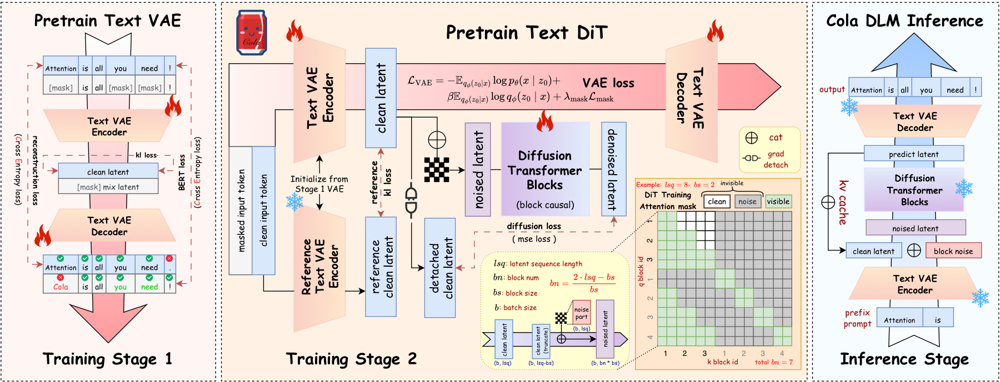
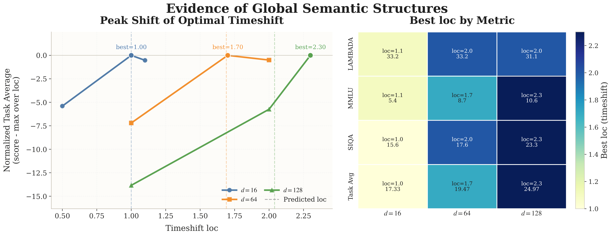
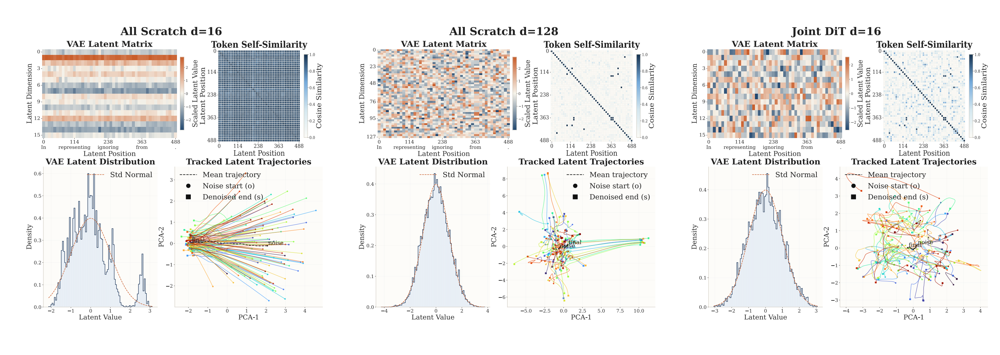
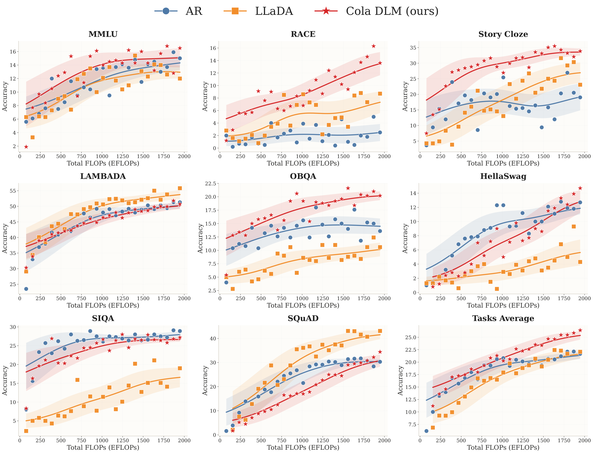
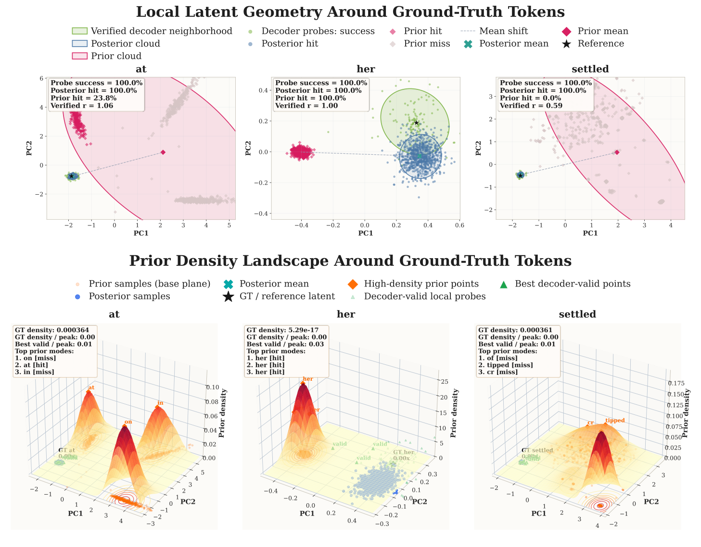
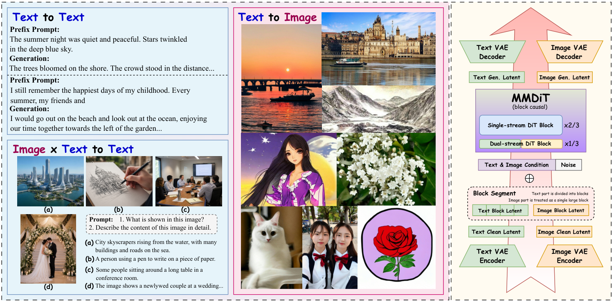

This is a blog about our perspective and reflections on Cola DLM.
We want to clarify our original intention: the motivation behind Cola DLM has never been diffusion — it has always been representation.
We did not build a diffusion language model just for the sake of building one; what we really wanted to figure out is a more upstream question — does text intelligence have to be tied to discrete tokens? If not, what kind of representation is better suited to carry semantics, organize knowledge, support generation, and ultimately interface with multimodal environments?
Paper: https://arxiv.org/abs/2605.06548
Project page: Cola DLM — Continuous Latent Diffusion Language Model
1. The Core Claim: Cola DLM Is Not "Yet Another Continuous DLM"
The diffusion in Cola DLM is not recovering tokens — it is transporting a latent prior.
This point is given a very rigorous probabilistic definition in the paper. The generative model of Cola DLM consists of only two things:
- $p_\psi(z_0)$ is the latent prior, learned by a block-causal DiT via Flow Matching;
- $p_\theta(x \mid z_0)$ is the conditional decoder, responsible for realizing the latent into concrete text;
- $q_\phi(z_0 \mid x)$, introduced during training, is only a variational encoder — it is not part of the generative model.
The stochastic path it actually runs is:
There are no tokens on this path. Tokens only appear in the very last step, realized by the decoder. Flow Matching learns the transport map from $\mathcal{N}(0, I)$ to the latent prior — not some "noisy token → clean token" denoising trajectory.
This is exactly where Cola DLM fundamentally diverges from most continuous DLMs. Some other related works mainly perform observation recovery on the token state space (there are of course works similar in spirit to ours). Cola DLM moves diffusion to the latent layer for prior transport, and leaves the tokens entirely to the decoder. This is not a difference of packaging — it is a change in what diffusion is actually doing inside the model.
2. The Starting Point: Token-Level Is Not Necessarily the Optimal State Space
A bold claim up front: tokens are the surface carrier of human language systems, not semantics itself.
The mainstream autoregressive language model takes the form:
It has been highly successful, but it implicitly makes a rather strong state-space assumption: the model's internal state is bound to the surface token prefix — global semantic planning and local lexical realization must jointly traverse the same, unidirectional, token-by-token filtration.
A moment's thought makes it clear that tokens are not semantics:
- Chinese: 我今天很开心。
- English: I am very happy today.
- French: Je suis très heureux aujourd'hui.
The three languages have completely different tokens, vocabularies, grammar, and local structures, yet the underlying semantics, emotion, and temporal condition are almost the same. The same holds within a single language:
- 我今天很开心。
- 今天我心情很好。
- 今天过得挺愉快。
The tokens differ wildly, but the semantics remain the same.
If a model only treats text as a token sequence, it must learn a separate set of local conditional probabilities for each surface form. But if there exists a more stable, more compressed latent semantic state, these paraphrases could in principle be mapped internally to nearly the same state.
So the first question Cola DLM asks is:
Our answer: not necessarily. Tokens are a product of historical evolution and engineering tokenizers, but the model's internal representation does not have to inherit this granularity. What truly matters is the representation; tokens are merely one form in which the representation is realized.
This is also why multi-token prediction (MTP) deserves to be re-understood. MTP should not be regarded merely as an inference-acceleration trick that predicts multiple tokens at once. More fundamentally, it challenges the assumption that one semantic computation must correspond to one token. If two, several, or even variable-length token spans share a more stable semantic chunk underneath, then the model has no obligation to organize all information at the finest token granularity. Cola DLM's hierarchical latent is a step further in the same direction: rather than just predicting multiple tokens, it first learns a latent state that can carry the semantics behind multiple tokens.
3. The Solution: Separating Semantics from Realization in Layers
If the data contains low-dimensional yet high-value global semantic structure, the most natural way to model it is to factor it into two layers: latent prior + conditional decoder.
Formally, suppose the true generative process looks like:
where $g$ is some global semantic variable. It need not be an explicit topic, nor a single vector — it can be a high-dimensional, structured, continuous latent semantic state.
Then text generation can be split into two relatively separable concerns:
AR models compress both into a single token chain, forcing global semantic planning, local lexical choice, syntactic realization, long-range dependencies, and information compression to all propagate through the same left-to-right prefix filtration. Cola DLM splits them into two clearly defined submodules:
- prior $p_\psi(z_0)$ learns the distribution of $g$;
- decoder $p_\theta(x \mid z_0)$ learns the realization of $x \mid g$.
The most crucial point here is: $z_0$ is not a simple replacement for token embeddings — it is a random variable that explicitly participates in marginalization. The modeling target of Cola DLM therefore shifts from
to
For this very reason, the paper deliberately downplays "continuous DLM" as the main contribution and emphasizes instead the latent / hierarchical / prior line. Continuous is a property of the representation space, diffusion is a tool for prior learning, and the real question is: what kind of latent state is best suited to carry language?
The overall Cola DLM pipeline (Text VAE → Block-causal DiT → Conditional Decoder) is shown below — note that diffusion / DiT acts as a prior module on the latent, not as a denoiser on tokens.

4. ELBO Information Decomposition: What Is This Framework Actually Optimizing?
The training of Cola DLM, from the very beginning, has never been pure token-level likelihood fitting.
To avoid staying at the intuitive level, let's examine the average ELBO of Cola DLM. For any text $x$, by Jensen's inequality:
Define the aggregated posterior
and the joint $q(x, z_0) = p_{\mathrm{data}}(x)\, q_\phi(z_0 \mid x)$. Then the data-averaged ELBO can be rewritten into a very clean three-term decomposition:
Each of these three terms can be read and diagnosed separately:
- Conditional realization: $\mathbb{E}_{q(x,z_0)}[\log p_\theta(x \mid z_0)]$. Whether the decoder can write out the text given a latent.
- Information compression: $I_q(X; Z_0)$. How much information about the original text is packed into the latent. This is the "rate" of the latent bottleneck. Too small, and the latent cannot carry enough semantics; too large, and the latent degenerates into a near-token-level memorization, losing abstraction and compression.
- Prior matching: $\mathrm{KL}(\bar q_\phi(z_0)\,\|\,p_\psi(z_0))$. Whether the learned prior can fit the aggregated latent distribution induced by the encoder on real data.
When encoder and decoder are fixed, prior learning reduces to
So the text modeling that Cola DLM aims to optimize is a hierarchical problem jointly composed of representation, compression, prior matching, and realization. It decomposes the monolithic token-level likelihood fitting and lets us diagnose and improve different sub-objectives separately.
5. When Is Layered Modeling Worth Doing: A Rate-Distortion Criterion
The advantage of Cola DLM is not automatically guaranteed by "using latent" or "using diffusion" — its validity rests on a precondition that can be checked.
We can phrase this rigorously in the language of representation rate-distortion. Define
This represents: when the latent channel is allowed to transmit at most $R$ nats of information, what is the minimum achievable reconstruction cost?
If $D(R)$ is already very low at small $R$, the data contains low-rate but high-value representations — much of the token-level detail is not necessary for generating high-quality semantics; what truly determines generation quality is some more abstract, more stable, and more transferable global semantic variable. In this case, a latent bottleneck is actually beneficial.
Conversely, if $D(R)$ only drops as $R \to H(X)$, then text is nearly incompressible, the local form itself carries the main semantics, and forcibly compressing the latent will only make conditional reconstruction harder.
A more formal "structured-generation hypothesis" is:
If this structure holds, then Cola DLM's layered design is close to the true generative mechanism: the prior learns $p^\star(g)$, and the decoder learns $p^\star(x \mid g)$.
In other words: the criterion for Cola DLM is not "we used diffusion" — it is "does the text distribution truly possess a low-dimensional global semantic structure?" This is an experimentally answerable question. In the next section, the RQ1 experiment attempts to give an existence proof via proof by contradiction.
6. Does the Latent Really Contain Shared Semantic Structure? The Proof-by-Contradiction Argument in RQ1
RQ1 is not an ordinary ablation — it answers the pivotal question of the entire theory: does the latent space really contain low-dimensional shared semantic structure, or is it merely a continuous stand-in for tokens?
We did not try to prove the existence of semantic structure directly, because such a thing is inherently hard to prove rigorously. Instead, our strategy was to construct a null hypothesis for refutation (inspired by the noise schedule and logSNR chapters in the Stable Diffusion 3 paper):
Suppose the latent representation is purely local and fully separable: each latent dimension contributes semantics independently; changing the latent dimension merely increases the number of independent local units, without altering the temporal scale required for semantic recovery.
This null hypothesis can be written as a formal proposition. Let $d$ be the latent dimension, $\delta$ the timestep shift (noise schedule location), and $J_d(\delta)$ some semantic evaluation metric. If the latent is purely locally separable and homogeneous, it must take the form
If we further assume each local dimension is homogeneous, then there exist a common $j(\delta)$ and positive constants $a_d > 0,\, b_d \in \mathbb{R}$ such that
Since $b_d$ is independent of $\delta$ and $a_d$ is only a positive scaling, we immediately get
In other words: under the purely locally separable assumption, the optimal timestep shift should not drift systematically with the latent dimension.
The logical structure is clear:
By contrapositive, if experiments show that $\delta^\star(d)$ drifts stably, monotonically, and reproducibly with $d$, then this null hypothesis is rejected.
The experimental phenomenon in RQ1 is very clear: by sweeping timestep shift across different latent dimensions and observing the peak location of semantic task performance (Task Avg), we obtain roughly
This drift is approximately monotonic; moreover, LAMBADA, MMLU, SIQA, and Task Avg all jointly support "larger latent dimension → preference for a larger loc region." That is, the peak shift is not the chance noise of a single benchmark — it is a phenomenon that consistently appears across multiple semantic tasks.

It is worth being precise about what this set of experiments does and does not prove:
It does not prove "there exists a unique nameable semantic variable $G$ in the latent space" — that would be a much stronger claim, and the paper does not dare to assert it. What it supports is a weaker but more reliable conclusion:
The latent representation is not purely locally separable; it contains cross-dimensional shared structure that influences semantic metrics.
This is enough to support the entire premise of Cola DLM: there is a shared structure in the latent worth being modeled by $p_\psi$. The RQ1 experiment may look obvious, but it provides a rigorous existential basis that gives us confidence to proceed to the corresponding scaling experiments.
7. Why Continuous: Because Semantics Itself Has a Geometric Structure
Continuous is not a fashion choice — it is because semantic relationships intrinsically have smooth geometry.
This section is easily misread as "continuous > discrete," so let me put it plainly first: it is not that continuous is necessarily superior to discrete. Rather, when what we want to model is the geometric structure of the semantic space, continuous spaces simply provide more natural tools.
Two of the most intuitive examples:
- "猫坐在沙发上" ("The cat is sitting on the sofa")
- "小猫躺在沙发上" ("The kitten is lying on the sofa")
The two sentences differ substantially at the token level, but are very close semantically. Conversely:
- "I have a cat."
- "I hate a cat."
Only one token differs, but the semantics are completely opposite. Token edit distance and semantic distance are two different scales — forcing semantic modeling onto the discrete token simplex requires roundabout means to capture semantic smoothness.
A reasonable latent space should at least weakly satisfy some form of semantic smoothness:
and ideally a weak inverse relation as well:
Such geometric relations are difficult to express naturally on the discrete token simplex, but on a continuous latent they can be directly described using interpolation, local perturbation, Gaussian smoothing, logSNR calibration, vector field transport, and so on.
So "continuous" in Cola DLM is not our goal — it is a well-behaved representational form:
- What we want is a representation that can carry semantic geometry;
- "Continuous" is the most natural carrier of such geometry;
- "Continuous," in turn, determines what tools the prior is well-suited for — and this leads us to diffusion / flow matching.
8. Why Diffusion / Flow Matching: It Is a Solver, Not the Motivation
In Cola DLM, Flow Matching is "a solver for modeling the continuous latent prior" — not "the definition of a diffusion language model."
Let us follow the logic of the previous section. Once the representation is continuous, prior learning amounts to solving
And $\bar q_\phi(z_0)$ is generally not Gaussian. It carries the cross-dimensional shared structure revealed by RQ1 and is a genuinely complex continuous distribution. To turn a simple distribution ($\mathcal{N}(0,I)$) into it, the most natural tool is continuous-time flow / diffusion:
In practice, Cola DLM slices the latent into blocks and performs a block-causal factorization:
and learns a conditional Flow Matching objective on each block:
Within blocks attention is bidirectional, and across blocks it is causal — which simultaneously delivers "intra-block parallel denoising" and "cross-block causal progression."
But to be clear, Flow Matching in Cola DLM is only a solver:
Flow Matching is a solver for latent prior learning, not the definition of the model itself.
Replacing it with rectified flow, NF, shortcut model, consistency model, or even an autoregressive latent prior would not, in principle, break the core structure of Cola DLM — because this layer is only responsible for transporting a simple noise distribution into the target distribution on the latent. Cola DLM would not turn into a different model because of such a substitution.
9. Text VAE Rather Than Just Embeddings: Because We Want an Explicit Latent Variable
Embeddings are also a continuous representation, but they remain token-aligned. What Cola DLM needs is an explicit latent variable that can participate in marginalization.
Last year we tried doing flow directly on the token embedding space. It is of course continuous, but it has two fundamental limitations:
- Token-aligned: every token still has an embedding, and the basic unit of the model is still the token. What it runs is "recovering token-aligned observations in a continuous space," not "modeling a generative distribution over a globally compressible state."
- No explicit latent-variable probabilistic interpretation: without
$$p(x) = \int p_\theta(x \mid z_0)\, p_\psi(z_0)\, dz_0$$ this marginal structure, one cannot recover the three-term ELBO decomposition, and so cannot separately discuss representation / compression / prior. Moreover, we do not have a theoretical justification that continuity alone could surpass discreteness (perhaps a point worth further discussion), but Cola DLM does provide a theoretical basis for surpassing discrete methods like AR.
Cola DLM uses a Text VAE because it provides a probabilistic interface from discrete text to continuous latent:
- encoder $q_\phi(z_0 \mid x)$: lifts text to a latent distribution;
- decoder $p_\theta(x \mid z_0)$: realizes the latent into text;
- prior $p_\psi(z_0)$: fits a generative distribution over the aggregated posterior.
This does not mean VAE is the only choice — the Future Prospects in the paper makes it clear: in the future, one could replace it with a stronger AE, RAE, BERT/T5-style semantic encoder, or even a multilingual shared encoder. The key is not VAE itself, but whether one can stably provide a generative, compressible, semantically well-organized latent space (representation).
10. A Unified Markov-Path View: How We Diverge From Other Continuous DLMs
LLaDA / Plaid modify the corruption-recovery process over token / token-aligned states; Cola DLM modifies what diffusion is actually doing inside the model.
The paper presents a very clear unified stochastic-path view. Any process-based generative model can be written as
This unified form does not determine the essence of the model. What truly distinguishes models is the state space of the path and its semantic role: paths running over text or near-lossless text-aligned representations are observation paths; paths used only to generate the latent prior are prior paths.
| Model | State Space | Path Role | Generative Factorization | Continuity Appears In | Explicit Latent |
|---|---|---|---|---|---|
| AR | Prefix Tokens | Direct Generation Path | $\prod_i p(x_i \mid x_{<i})$ | none | No |
| LLaDA | Discrete Masked Sequences | Discrete Observation-Recovery | $p(s_T) \prod_t p_\theta(s_{t-1} \mid s_t)$ | discrete token space | No |
| Plaid | Continuous Token-Aligned Reps | Continuous Observation-Recovery | $p(h_T) \prod_t p_\theta(h_{t-1} \mid h_t)$ | continuous token space | No |
| Cola DLM | Compressed Latent Sequences | Prior-Transport Path | $\int p_\theta(x \mid z_0)\, p_\psi(z_0)\, dz_0$ | Latent Space | Yes |
LLaDA loosens the left-to-right prior of AR, but it still performs corruption-recovery over a discrete token state. Plaid moves this onto a token-aligned continuous representation, but the objective is still observation recovery. Cola DLM is a different thing — it transports a prior on the latent, and tokens are emitted by the decoder in one shot.
For this reason, the criterion given in the unified-criterion section of the paper is a total loss that accounts for both model approximation error and variational inference gap:
Cola DLM is better than a reference model if and only if its total statistical burden is smaller. For example, against AR:
So whether Cola DLM is advantageous is ultimately determined by three curves:
This shows that strictly speaking, neither diffusion nor continuity automatically delivers gains — they require the structural premise that the data itself has "low-dimensional global semantics + high-dimensional local token realization."
11. Key Facts in Training: Fixed vs Joint, BERT Loss, VAE logSNR
The latent space can neither be frozen to death nor be set free from scratch. It must start from a stable initialization and co-evolve with the prior in a controlled manner.
The paper splits the training of Cola DLM into two stages.
Stage 1: Text VAE pretraining. Build a stable latent–text correspondence. The loss is
The BERT-style mask loss here is not decorative — it plays a critical role in stage 2, preventing the VAE encoder from "semantic collapse" under reconstruction pressure and keeping the encoder serving more than just reconstruction by preserving usable local semantic structure.
Stage 2: Block-causal DiT prior learning. The visible set is
The $\operatorname{sg}(\cdot)$ (stop-gradient) here is crucial: it prevents the diffusion loss from directly hacking the encoder and causing latent collapse.
The total loss in stage 2 combines VAE preservation, FM prior, and a reference regularizer:
This is not a mechanical stack of VAE / DiT / decoder — it is a controlled co-adaptation: the encoder reshapes the latent distribution, the prior regularizes it back, and the decoder maintains the ability for textual realization. The reference regularizer term specifically suppresses latent drift.
RQ2 yields several very concrete and very consistent conclusions:
(1) Fixed vs Evolving Latent. Under the same compute budget, comparing Fix VAE / Joint DiT x1 / Joint DiT x0.01 / All Scratch x1 / Interval:
- At small compute, Fix VAE keeps up, even slightly better;
- At large compute, Joint DiT x1 keeps rising and ultimately achieves the best results on Task Avg, LAMBADA, MMLU, and SIQA, while Fix VAE gradually saturates;
- All Scratch x1 is consistently the worst — showing that "trainable latent" is not the essence of the advantage; the advantage comes from "starting from a meaningful pretrained latent and then co-adapting";
- Joint DiT x0.01 and Interval both fall short of Joint DiT x1, indicating that insufficient latent update strength or periodic freezing both disrupt co-evolution.
Visualization shows that the latent from training-from-scratch has more collapsed geometry and more monotonic trajectories, while the latent from joint training with stable initialization is more structured and more semantic. We have been doing additional work recently with deeper understanding of joint training — stay tuned for follow-up results!

(2) Latent Dimension. Under the All Scratch ablation at 117 EFLOPs:
| Method | LAMBADA | MMLU | SIQA | Avg. |
|---|---|---|---|---|
| All Scratch, $d=16$, loc=1 | 14.3 | 6.9 | 4.9 | 8.7 |
| All Scratch, $d=64$, loc=1 | 20.9 | 5.4 | 7.6 | 11.3 |
| All Scratch, $d=128$, loc=1 | 18.5 | 8.1 | 8.9 | 11.8 |
The average score climbs from 8.7 at $d=16$ to 11.8 at $d=128$. Combined with the drift in RQ1: latent dim is not merely "enlarging the space" — it is also shifting the optimal recovery location of semantic information on the logSNR axis. This is why the paper repeatedly emphasizes that "latent dim, VAE logSNR, and noise schedule are not independent hyperparameters but jointly shape the effective mutual-information curve."
(3) BERT-style loss and semantic smoothness. Under the Joint DiT setting, adding BERT loss consistently outperforms not adding it; the improvement is especially pronounced when the VAE learning-rate ratio is $=1$ (a more active latent update). "Letting the latent move" is far from enough — it must be given a semantic constraint, otherwise it may drift simply to reduce diffusion / reconstruction loss.
(4) VAE logSNR. At the 77.86 / 116.78 EFLOPs budgets, learnable VAE logSNR (which converges to $\approx 4.5$) is the strongest overall; fixed VAE logSNR = 1.5 is the best fixed alternative. VAE logSNR controls the local smoothness of the latent probability space, which is a different thing from "semantic smoothness" — we will return to this in the PPL section.
In summary:
The latent space is the central object of Cola DLM. It is neither fixed nor casually trained; it must start from a stable init, be semantically constrained (BERT loss), be calibrated by an appropriate logSNR, and co-evolve with the prior during joint training.
12. Tuning Logic on the Diffusion Side: Block Size, Noise Schedule, Sampling Steps, CFG
All the tuning in RQ3 is essentially doing the same thing — aligning the denoising trajectory with the semantic-information curve over the latent.
I summarize the key conclusions of RQ3 by "training-side / inference-side," then give a unified explanation.
(1) DiT Block Size. Sweeping block size = 1, 16, 64, 128 over 30k / 40k checkpoints:
- $\text{block} = 16$ achieves the highest Task Avg on both checkpoints, with especially stable performance on LAMBADA and MMLU;
- $\text{block} = 64, 128$ visibly degrade on all tasks;
- $\text{block} = 1$ (close to fully causal token-level processing) is stronger than 64/128 but still weaker than 16.
Reading: block size is not an ordinary engineering parameter; it tunes the tradeoff between "local realization granularity vs. global semantic aggregation." Too small, and the model degenerates into token-by-token causality, losing the benefit of intra-block parallel attention; too large, and intra-block local interactions get diluted, hurting semantic aggregation.
(2) Noise Schedule. Sweeping schedule location $\mathrm{loc} \in \{0, 1, 2, 3, \dots\}$ + uniform:
- $\mathrm{loc} = 1.0$ achieves the highest Task Avg on both 30k / 40k, with particularly clear improvements on MMLU and SIQA;
- $\mathrm{loc} = 0$ or uniform are consistently weaker;
- Joint DiT × $\mathrm{loc} = 1$ can ultimately match or even exceed the corresponding Fix VAE baseline, while mismatched schedules cannot.
Why is the schedule so "sensitive"? The paper provides the implication in the appendix: changing the schedule location shifts the logSNR trajectory, and thereby changes how much semantic information the DiT sees at different diffusion times. So the "best schedule" should be understood as:
For this very reason, the optimal schedule is coupled with latent dim, VAE logSNR, and block size — the drift phenomenon in RQ1 is, in essence, a different aspect of this same coupling.
(3) Sampling Steps. 1–2 steps are essentially unusable; by 8–10 steps most performance has recovered; 16–32 steps basically saturate. Because block size = 16, 8–10 steps means roughly 8–10 sequential denoising operations per 16 text tokens — equivalent to a 1.6–2.0× compression in sequence depth relative to AR.
(4) CFG. A typical non-monotonic curve. Task Avg rises sharply from 0, peaks around 3–6, then begins to fall; beyond 10 it degrades noticeably, and at 20 or 60 it degrades severely. Excessive CFG distorts the denoising trajectory rather than improving it — consistent with the experience from image diffusion.
The "optimal configuration" locked in by the paper in RQ4 is:
But in subsequent experiments we have found that with a larger latent dim and a properly chosen logSNR, even stronger performance is achievable — we welcome others to try this as well.
13. Scaling Experiments
At ~2B parameters, ~2000 EFLOPs, and under strictly matched comparisons, Cola DLM's hierarchical continuous latent prior modeling demonstrates a meaningful scaling trend.
- Under strict matching (AR, LLaDA, and Cola DLM all have ~1.8B non-embedding backbone, ~2B total parameters with embedding), baselines are trained independently. Cola DLM uses ~500M VAE + 1.8B DiT; AR and LLaDA also keep their non-embedding backbones at ~1.8B;
- All models are evaluated under a unified few-shot generative protocol: LAMBADA and SQuAD as generative tasks; multiple-choice tasks are also cast as few-shot generation;
- Scaling curves go up to ~2000 EFLOPs.
The results:

- On Task Avg, Cola DLM shows the steadiest upward trend and achieves the best results in the large-compute regime;
- On tasks that rely more on global semantic organization and reasoning (MMLU, RACE, Story Cloze, OBQA), Cola DLM's mid-to-late scaling advantage is especially pronounced;
- On generative tasks (LAMBADA, SQuAD), Cola DLM's scaling behavior matches or exceeds AR / LLaDA — on SQuAD it even surpasses AR in the large-budget regime and approaches LLaDA's strong-performance region.
One thing must be said honestly: the "lower absolute scores" on multiple-choice tasks are an expected outcome of the unified generative protocol, not the ceiling of model capability (we are limited by compute resources and will continue to work toward training an industrial-grade model for the community). In a likelihood-based discriminative setting the absolute numbers would differ; but for a strict, apples-to-apples comparison across all models, the generative protocol is the fair choice. The paper specifically discusses this in RQ4 — the reason will be expanded in the next section.
Furthermore, this configuration itself is conservative:
- The latent dim is only $d = 16$ (RQ2 already shows that $d = 64, 128$ have clear room for improvement at 117 EFLOPs);
- Compression has not yet solved the boundary-alignment problem (see the patch experiment below);
- There is still substantial room in the joint calibration of VAE logSNR, noise schedule, and block size;
- Text VAE is not the final form; it can be replaced with a stronger representation model;
- Data scale and training scale have not yet approached industrial-grade limits.
14. PPL Is No Longer the Best Evaluation Language Under the New Paradigm
In Cola DLM, there is a structural gap between generation quality and likelihood-oriented PPL, and this gap is not a bug — it is a natural consequence of the new representation.
To articulate this clearly, consider two quantities. For the prefix–response split $x = (x^{\mathrm{pre}}, x^{\mathrm{res}})$, the true conditional marginal of the response is
while the local score we can actually compute is
The former only requires prior mass to reach the "decoder-valid" semantic region in order to generate reasonable text; the latter requires the prior density to perform precise local calibration in the neighborhood of the ground-truth posterior. These two objectives are not the same thing.
This is not hand-waving: the paper provides very concrete token-level counterexamples in the discussion. Consider the ground-truth token at in a passage:
- Under direct training (unfixed VAE logSNR ≈ 4.5), likelihood-derived PPL = $1.15 \times 10^6$, generated token is
on; - Under fixed VAE logSNR = 1.0, PPL plummets to 641.57, generated token is
in; - Under fixed VAE logSNR = 1.5, PPL = 245.36, generated token is
,.
The lower the PPL, the worse the generation. Now look at the token her: under direct training, PPL is absurdly high ($6.93 \times 10^8$), yet the generated token is exactly her, with generation PPL = 1.12.
Generation correlates more with the semantic smoothness of the latent space, while likelihood-oriented PPL correlates more with the probability-space smoothness determined by VAE logSNR. These two kinds of smoothness are not the same kind of smoothness.
More intuitively, the figure below compares the latent geometry and prior-density landscape around the same ground-truth token: decoder probe success and posterior hit are both high, showing that the decoder can stably recover in the posterior neighborhood; but prior hit and density alignment vary dramatically across samples, meaning the main issue is not decoder failure but rather a local calibration drift of the prior around the gold latent.

This is why Cola DLM emphasizes using a unified few-shot generative protocol in RQ4 — not to dodge the fact that PPL is unfavorable, but because under this representation/objective change, PPL is no longer an indicator aligned with true generative ability.
More generally: when you change representation, you must change evaluation language. This is a corollary of representation-centric thinking, not a special case of Cola DLM.
15. Token Granularity Is Not Necessarily Optimal: An Interesting Signal From the Patch Experiment
The current token segmentation is not necessarily the most semantically efficient carrier; once boundary alignment is solved, "using fewer latents to express more tokens" may actually be better.
The discussion in the paper includes a compression experiment: same latent dim ($d = 128$), comparing patch size 1 (one latent per token) vs patch size 2 (one latent per two tokens):
| Sample Label | Overall p1 | Overall p2 | Mod0 p1 | Mod0 p2 | Mod1 p1 | Mod1 p2 |
|---|---|---|---|---|---|---|
| LAMBADA | 31.10 | 17.40 | 32.11 | 34.55 | 30.12 | 0.79 |
| MMLU | 5.40 | 3.90 | 6.89 | 7.68 | 3.86 | 0.00 |
| SIQA | 11.10 | 6.10 | 12.92 | 12.13 | 9.26 | 0.00 |
| Avg. | 15.87 | 9.13 | 17.31 | 18.12 | 14.41 | 0.26 |
Intuitively, squeezing two tokens into one latent should lose information. But in fact:
- Overall, p2 is noticeably weaker than p1;
- But when broken down, almost all of the disadvantage comes from Prompt Len Mod1 (cases where prompt length is not divisible by patch size);
- Looking only at Prompt Len Mod0 (divisible by 2), p2 is actually slightly better than p1 on average (18.12 vs 17.31).
In other words, the overall weakness of p2 is not mainly due to compression itself, but boundary misalignment: when prompt length is not divisible by patch size, the prompt latent is semantically "shifted," and this prompt latent is precisely the clean condition for the subsequent block-wise prior — once it shifts, all downstream generation shifts.
This is a highly suggestive signal:
- Token-level segmentation is not necessarily the optimal granularity;
- If latent grouping is semantically valid, then "each latent corresponding to a larger textual span" actually aligns better with the prior's primary duty — organizing global semantics, not bearing token-by-token reconstruction;
- Practically, this compression also makes sampling more efficient (with patch=2, the same block size = 16 already covers 32 text tokens).
The direction worth exploring is clear: adaptive segmentation, learned boundary scorer, variable-length latent chunks, phrase / event-level pooling, hierarchical latent pyramids ... in short, the constraint of "one token per latent" need not be enforced. This is in line with the logic of MTP in Section 2 — the modeling unit need not stop at the token.
16. Future Directions: Exploring Better Forms of Text Representation
Cola DLM is one attempt at "swapping state spaces," but it is not the endpoint of this line; what really matters is continuing to push the question of "what is a better representation for text."
Based on the analysis above, there are at least four directions worth pursuing:
- Stronger representation modules. The VAE can be replaced with a stronger AE / RAE / BERT or T5-style semantic encoder / sentence- or discourse-level encoder / multilingual shared semantic encoder. The quality of representation is the ceiling of this line.
- Better compression. The patch experiment tells us that token-level is not the endpoint. Adaptive segmentation, learned boundary, phrase / event chunking, hierarchical latent pyramids are all worth taking seriously.
- More systematic joint calibration of logSNR / noise / dim / block. These are not independent hyperparameters; they jointly act on the same "semantic-information curve." More systematic theory and tools are needed to calibrate this curve.
- Stronger / more general priors. Flow Matching is a good solver, but not the only choice; CNF, rectified flow, shortcut / consistency models, autoregressive latent priors, hybrid continuous-discrete priors all deserve to be put on the table for comparison.
Note that I deliberately do not list "diffusion" as a key direction here, because it has never been the core of this line. It is used now simply because it fits well.
17. Unified: Encoder = Sensor, DiT = Brain, Decoder = Actuator
I want to keep this section short — unified is a value-added benefit of Cola DLM, not its motivation; what truly matters is not the technical demo, but the way of thinking behind it.
Why is unified important? I prefer to look at it through the lens of "the interaction between the model and its environment." Abstract a learning system as an environment:
where $\mathcal{O}$ is the observation space, $\mathcal{A}$ is the action / output space, $\mathcal{T}$ is the state transition, $\mathcal{F}$ is the feedback-generation mechanism, and $\mathcal{G}$ is the rule that converts feedback into optimization signals. In real environments, observations are multimodal:
If there exists a joint latent state $z_t = \Phi(o_t^{(1)}, \dots, o_t^{(M)})$ such that feedback and transitions depend primarily on this joint state and cannot be decomposed into per-modality independent products:
then the matter is structurally inseparable — simply stitching different modalities onto a single backbone is not enough; the model must learn joint regularities in a shared latent interaction space.
A long-standing obstacle to unified modeling is exactly this: text is discrete, while images, video, and audio are naturally continuous. To bring them all into the same latent world state, one needs an interface that maps text into a continuous semantic latent. Cola DLM provides exactly this interface:
It can then be combined with image / video / audio latents:
with a shared block-causal prior organizing cross-modal states in the latent, and each modality's decoder realizing the specific output. From the ELBO perspective, this unified form is consistent with the text-only decomposition:
that is, unified modeling is not "stuffing multimodalities into one backbone," but sharing a semantic prior across heterogeneous observations.
I like an intuitive metaphor:
- Encoder = sensor, mapping the external environment into the latent;
- DiT / prior model = brain, organizing semantics and dynamics in the latent;
- Decoder = actuator, realizing the internal state into concrete outputs such as text / image / video / audio / action.
The paper also shows a feasibility demo of Cola DLM in the unified setting: text-only continuation, image-conditioned text, and text-to-image jointly trained within the same framework (though the scale and finetuning are still early).

A more macro point I want to make: the next evolutionary focus of language models should not lie only in "how models interact with their environment" through tricks (various RL, distillation, reward shaping), but should also expand the modalities of model-environment interaction themselves. The former is grinding optimization methods under fixed modality interfaces; the latter is reshaping the world structure that a model can "see" and "act upon." Cola DLM's text-latent interface, in my view, is closer to the latter.
18. Conclusion: Representation > Diffusion
Let me wrap up with a small summary. We know there are many imperfections in the paper, so please be gentle, but we also hope for broad discussion and criticism — it will greatly help our follow-up work!
- The core question of Cola DLM is not "can diffusion generate text" but "what is a better representation for language intelligence."
- Tokens are the surface carrier of language and not necessarily the optimal state. The shared semantics behind different languages and different paraphrases are the most direct counterexample.
- Hierarchical latent + continuous representation + diffusion prior is a natural composition for this line: hierarchy is to separate global semantics from local realization, continuity is because semantics itself has geometry, and diffusion / FM are merely solvers for modeling such a continuous prior.
- The timestep shift drift experiment in RQ1 refutes the "purely locally separable latent" hypothesis and supports the existence of cross-dimensional shared semantic structure in the latent.
- PPL is no longer a natural evaluation language under this paradigm; once representation changes, evaluation language must change with it.
- The patch experiment hints that token-level segmentation may not be the optimal granularity; stronger representational forms with more efficient semantic carrying will surely emerge — this is also what MTP, at a higher level, is trying to answer.
- Unified is not stuffing multimodalities into one backbone; it is letting the model learn in a structurally inseparable environment. Cola DLM's text latent is a bridge for discrete text to enter continuous multimodal interaction.
To close with one sentence: the next generation of language models need not be forever defined by next-token prediction. It can be — and should be — some form of representation-centric paradigm. Cola DLM is only an early attempt along this path, but the path itself is worth continuing.
The code and models will also be released this week, integrated into the transformers library and open-sourced — please keep an eye on the project page for updates! Many thanks again to the community for the attention, and we look forward to your discussion and critique.